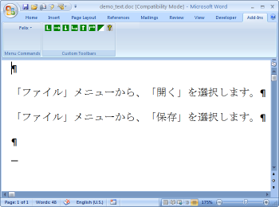
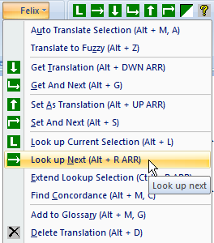
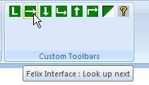
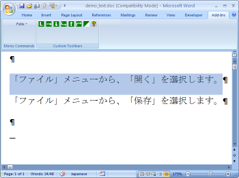
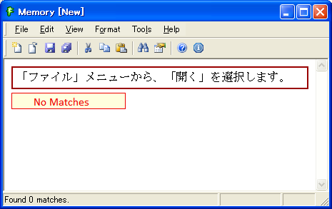
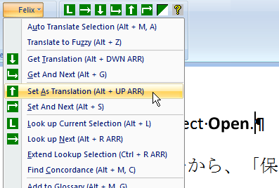
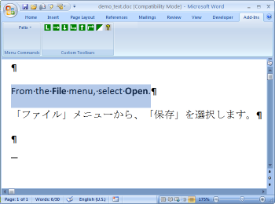
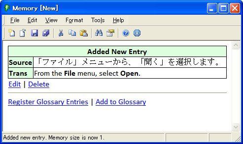
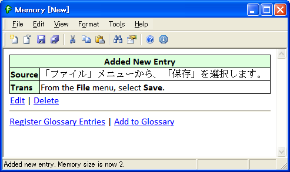

Quick-start Tutorial Using MS Word¶
This brief tutorial will help you get up and running with Felix for translating documents in Microsoft® Word.
Launch Felix, and open the document you want to translate in Word.

Open the document
Make sure the Add-Ins tab is open if you are using Word 2007 or higher. From the Felix menu, select Look up Next, or click the right arrow button on the Felix toolbar.

Menu selection

Toolbar button
This will select the first sentence, and look it up in Felix. Since you won’t already have a translation memory loaded, it should show that you have no matches.

Selected in Word

Shown in Felix window
Translate the sentence, overwriting the original.
After you translate it, put the cursor at the end of the sentence, and select Felix ‣ Set as Translation from the menu, or click the up arrow button on the Felix toolbar.

Menu selection

Toolbar button
This will register the translation for the current sentence (“query”) in the Felix window.

Selected in Word

Appears in Felix window
Again select Felix ‣ Look up Next or click the right arrow to repeat this process.
If you look up a sentence that’s already in your memory (or similar to one), the matching source and translation will appear in the Felix menu.

Shown in Felix window
To retrieve that translation, with the sentence selected in Word, go to the Felix menu and select Felix ‣ Get Translation from the menu, or click the down arrow on the Felix toolbar.

Menu selection

Toolbar button
The translation will be added to your document, overwriting the selected source segment.

The translation is retrieved
If the match was a “fuzzy” (non-perfect) match as shown above, or if you need to make changes for context, make your changes and then register the new translation using the procedure in step 3, above.

Shown in Felix window
Carry on translating the next sentence.